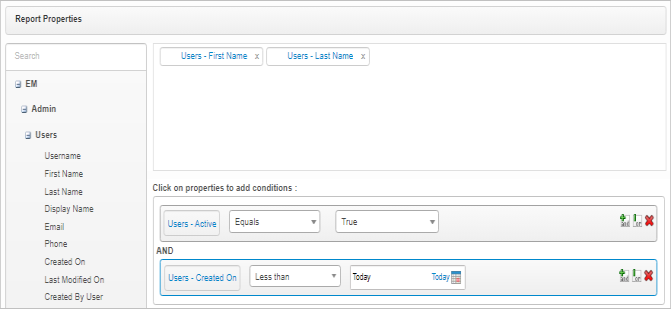

Report Properties and Conditions
Use this function to add properties and conditions to apply to the report.
|
When adding report properties, at least one display field and one condition must be selected before moving to the next step in the process. |
Example Scenario
The following is an example of generating a report to show what user accounts were created before a specific date.
The Display field selections are:
Users - First Name
Users - Last Name
The Condition selections are:
Users - Active / Equals / True
AND
Users - Created on / Less Than / Today
Do any of the following:
Use the + icon to add the AND argument.
Click the and button to add the AND argument
Use the ! icon to add the OR argument.
Click the or button to add the OR argument
Click the X to delete the row.
Click the bin icon to delete the row.

To edit the selections/entries at any time, click the Details tab.
To edit the selections/entries at any time, select the applicable report and click the Details tab.
| 1. | In the pane on the left, navigate to the applicable property group (such as Admin > Users) and locate the applicable property. |
To add a property (display field), click and drag the selection to the upper pane on the right.
To add a condition, select an item in the left pane.
Click and drag the selection to the lower pane on the right.
| 2. | Click Save and Continue. The window refreshes with the Details and Run Reports tabs displayed. By default, the Run Reports tab is selected. |
| 3. | Follow the instructions for Run Reports to continue the process. |
Related Topics